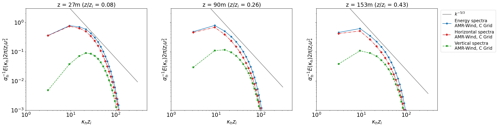

Compute the wavenumber spectra
import sys, os, shutil, io
import numpy as np
from functools import partial
import matplotlib.pyplot as plt
import pandas as pd
df_27_C = pd.read_csv('../results/neutral_CGrid_E_spectra_Z027.csv')
df_90_C = pd.read_csv('../results/neutral_CGrid_E_spectra_Z090.csv')
df_153_C = pd.read_csv('../results/neutral_CGrid_E_spectra_Z153.csv')
df_35_D = pd.read_csv('../results/neutral_DGrid_E_spectra_Z035.csv')
df_27_D = pd.read_csv('../results/neutral_DGrid_E_spectra_Z027.csv')
df_90_D = pd.read_csv('../results/neutral_DGrid_E_spectra_Z090.csv')
df_153_D = pd.read_csv('../results/neutral_DGrid_E_spectra_Z153.csv')
df_315_D = pd.read_csv('../results/neutral_DGrid_E_spectra_Z315.csv')
ustar_C=0.208411
zi_C = 352.066531
ustar_D= 0.203669
zi_D= 337.048425
a1d = 0.5
ah = 0.54 * (55/18) * a1d
Wavenumber spectra (C grid)
# Run the driver
fig, axs = plt.subplots(1,3,figsize=(8*3,6), dpi=125, sharey=True)
fsize = 18
s=12
dfs_C = [df_27_C,df_90_C,df_153_C]
zs = [27,90,153]
fact = [0.0075,0.005,0.003]
for axiter, ax in enumerate(axs):
plt.sca(ax)
df_C = dfs_C[axiter]
normz = zs[axiter]/zi_C
strz = f"{normz:.2f}"
ax.set_title('z = '+str(zs[axiter])+'m ($z/z_i$ = ' + strz + ')',fontsize=fsize)
Escaling_C = 2 * np.pi / (zi_C * ustar_C**2 * ah)
kscaling_C = zi_C
plt.xticks(fontsize=fsize) # Set x tick label font size
plt.yticks(fontsize=fsize) # Set y tick label font size
msize = 5
plt.loglog(kscaling_C * df_C['kmag'],fact[axiter]*df_C['kmag']**(-5/3),c='tab:gray',ls='-',label='$k^{-5/3}$')
plt.loglog(kscaling_C * df_C['kmag'],Escaling_C * df_C['energy'],c='tab:blue',label='Energy spectra\nAMR-Wind, C Grid',marker='o',markersize=msize,ls='-')
plt.loglog(kscaling_C * df_C['kmag'],Escaling_C * df_C['horiz'],c='tab:red',label='Horizontal spectra\nAMR-Wind, C Grid',marker='D',markersize=msize,ls='-.')
plt.loglog(kscaling_C * df_C['kmag'],Escaling_C * df_C['vertical'],c='tab:green',label='Vertical spectra\nAMR-Wind, C Grid',marker='s',markersize=msize,ls='--')
plt.ylabel("$\\alpha_h^{-1} E(\kappa_h)2\pi/z_i u_*^2$",fontsize =fsize)
plt.xlabel("$\kappa_h z_i$",fontsize=fsize)
if axiter == 2:
plt.legend(loc=4,fontsize=fsize-4,bbox_to_anchor=(1.5,0.55))
ax.set_xlim(1,500)
ax.set_ylim(0.001,3)
plt.savefig("./figures/ABL_wavenumber_spectra_C_grid.png")

Energy, horizontal and vertical spectra (C and D grid)
# Run the driver
fig, axs = plt.subplots(1,3,figsize=(8*3,6), dpi=125, sharey=True)
fsize = 18
s=12
dfs_C = [df_27_C,df_90_C,df_153_C]
dfs_D = [df_27_D,df_90_D,df_153_D]
zs = [27,90,153]
fact = [0.0075,0.005,0.003]
for axiter, ax in enumerate(axs):
plt.sca(ax)
df_C = dfs_C[axiter]
df_D = dfs_D[axiter]
normz_C = zs[axiter]/zi_C
normz = zs[axiter]/zi_D
strz = f"{normz:.2f}"
ax.set_title('z = '+str(zs[axiter])+'m ($z/z_i$ = ' + strz + ')',fontsize=fsize)
Escaling_C = 2 * np.pi / (zi_C * ustar_C**2 * ah)
Escaling_D = 2 * np.pi / (zi_D * ustar_D**2 * ah)
kscaling_C = zi_C
kscaling_D = zi_D
plt.xticks(fontsize=fsize) # Set x tick label font size
plt.yticks(fontsize=fsize) # Set y tick label font size
msize = 4
plt.loglog(kscaling_C * df_C['kmag'],fact[axiter]*df_C['kmag']**(-5/3),c='tab:gray',ls='-',label='$k^{-5/3}$')
plt.loglog(kscaling_C * df_C['kmag'],Escaling_C * df_C['energy'],c='tab:blue',label='Energy spectra \nAMR-Wind, C Grid',ls='-')
plt.loglog(kscaling_D * df_D['kmag'],Escaling_D * df_D['energy'],c='tab:orange',label='Energy spectra\nAMR-Wind, D Grid',ls='-')
plt.loglog(kscaling_C * df_C['kmag'],Escaling_C * df_C['horiz'],c='tab:blue',label='Horizontal spectra \nAMR-Wind, C Grid',ls='-.')
plt.loglog(kscaling_D * df_D['kmag'],Escaling_D * df_D['horiz'],c='tab:orange',label='Horizontal spectra\nAMR-Wind, D Grid',ls='-.')
plt.loglog(kscaling_C * df_C['kmag'],2 * Escaling_C * df_C['vertical'],c='tab:blue',label='Vertical spectra\nAMR-Wind, C Grid',ls='--')
plt.loglog(kscaling_D * df_D['kmag'],2 * Escaling_D * df_D['vertical'],c='tab:orange',label='Vertical spectra\nAMR-Wind, D Grid',ls='--')
plt.ylabel("$\\alpha_h^{-1} E(\kappa_h)2\pi/z_i u_*^2$",fontsize =fsize)
plt.xlabel("$\kappa_h z_i$",fontsize=fsize)
if axiter == 2:
plt.legend(loc=4,fontsize=fsize-4,bbox_to_anchor=(1.5,0.45))
ax.set_xlim(1,500)
ax.set_ylim(0.001,3)
plt.savefig("./figures/ABL_wavenumber_spectra_C_D_grids.png")

Comparisons with Berg et. al. (2020), D grid
#Load Berg Spectra
berg_D_0p1_horiz = pd.read_csv('../results/horiz_spectra_D_berg_0p1.csv')
berg_D_0p1_vertical = pd.read_csv('../results/vertical_spectra_D_berg_0p1.csv')
berg_D_0p5_horiz = pd.read_csv('../results/horiz_spectra_D_berg_0p5.csv')
berg_D_0p5_vertical = pd.read_csv('../results/vertical_spectra_D_berg_0p5.csv')
berg_D_0p9_horiz = pd.read_csv('../results/horiz_spectra_D_berg_0p9.csv')
berg_D_0p9_vertical = pd.read_csv('../results/vertical_spectra_D_berg_0p9.csv')
# Run the driver
fig, axs = plt.subplots(1,3,figsize=(8*3,6), dpi=125, sharey=True)
fsize = 18
s=12
dfs_D = [df_35_D,df_153_D,df_315_D]
dfs_berg_horiz = [berg_D_0p1_horiz,berg_D_0p5_horiz,berg_D_0p9_horiz]
dfs_berg_vertical = [berg_D_0p1_vertical,berg_D_0p5_vertical,berg_D_0p9_vertical]
berg_zizh = [0.1,0.5,0.9]
zs = [35,153,315]
fact = [0.0075,0.002,0.001]
for axiter, ax in enumerate(axs):
plt.sca(ax)
df_D = dfs_D[axiter]
df_berg_horiz = dfs_berg_horiz[axiter]
df_berg_vertical = dfs_berg_vertical[axiter]
normz = zs[axiter]/zi_D
strz = f"{normz:.2f}"
ax.set_title('z = '+str(zs[axiter])+'m ($z/z_i$ = ' + strz + ')',fontsize=fsize)
Escaling_D = 2 * np.pi / (zi_D * ustar_D**2 * ah)
kscaling_D = zi_D
plt.xticks(fontsize=fsize) # Set x tick label font size
plt.yticks(fontsize=fsize) # Set y tick label font size
msize = 4
plt.loglog(kscaling_D * df_D['kmag'],fact[axiter]*df_D['kmag']**(-5/3),c='tab:gray',ls='-',label='$k^{-5/3}$')
plt.loglog(kscaling_D * df_D['kmag'],Escaling_D * df_D['horiz'],c='tab:orange',label='Horizontal spectra, AMR-Wind, D Grid',ls='-')
plt.loglog(kscaling_D * df_D['kmag'],2 * Escaling_D * df_D['vertical'],c='tab:orange',label='Vertical spectra, AMR-Wind, D Grid',ls='--')
plt.loglog(df_berg_horiz['X'],df_berg_horiz['Y'],c='k',label='Horizontal spectra, Berg et. al. (2020)\n D Grid, $z/z_i=$' + str(berg_zizh[axiter]),ls='-')
plt.loglog(df_berg_vertical['X'],df_berg_vertical['Y'],c='k',label='Vertical spectra, Berg et. al. (2020)\n D Grid, $z/z_i=$' + str(berg_zizh[axiter]),ls='--')
plt.ylabel("$\\alpha_h^{-1} E(\kappa_h)2\pi/z_i u_*^2$",fontsize =fsize)
plt.xlabel("$\kappa_h z_i$",fontsize=fsize)
plt.legend(loc=3,fontsize=fsize-8)
ax.set_xlim(1,500)
ax.set_ylim(0.001,3)
plt.savefig("./figures/ABL_wavenumber_spectra_D_grid.png")